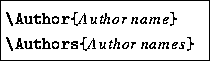

The cernlib style defines command sequences for flagging detailed information about every package. These commands are described below:
Typesets the string ``Accuracy:'' on a line by itself.
Typesets the string ``Error handling:'' on a line by itself.
Typesets the string ``Long Write-up:'' on a line by itself.
Typesets the string ``Method:'' on a line by itself.
Typesets the string ``Notes:'' on a line by itself.
Typesets the string ``References:'' on a line by itself.
Typesets the string ``Restrictions:'' on a line by itself.
Typesets the string ``Source:'' on a line by itself.
Typesets the string ``Structure:'' on a line by itself.
Typesets the string ``Timing:'' on a line by itself.
Typesets the string ``Usage:'' on a line by itself.
The \Cernhead command starts the description of a new routine, resetting the page-counters, enters information into index, and typesets the title heading for the writeup. This command uses the information defined by the commands below:

You can specify the author(s) of
the routine with the \Author and \Authors commands, eg.
\Authors {F.Bruyant, M.Maire}.
The \Keywords command allows you to specify keywords associated to the routine being described. The keywords are written to an external file and can be used in online or hypertext versions of the documentation. eg.
\Keywords{integration, rational, square root}
This command specifies in which computer language the package/routine is written, eg. Fortran, C, Assembler, etc.
This command specifies the name of the computer library
in which the given package/routine can be found, eg.
KERNLIB, MATHLIB.
With the \Origin command (GEANT only) you can specify the
source where the routine comes from, eg. \Origin{GEANT3}.
This commands specifies the date of the last revision.
Identifier for routine (GEANT only), eg. BASE020.
The \Submitter command allows you to specify the name(s) of the person(s) who submitted the routine(s).
This commands specifies the date when the package was submitted,
eg. \Submitted{01.10.84}.
The \Version command specifies the name
with with the package is identified in the library (CERNLIB)
(eg. \Version{BINOM}) or the version number for GEANT,
(eg. \Version{Geant 3.11}).
As an example, figure 4.1 shows
the input and generated output for CERNLIB routine B100
Figure 4.1: Example of using the cernman
and cernlib styles